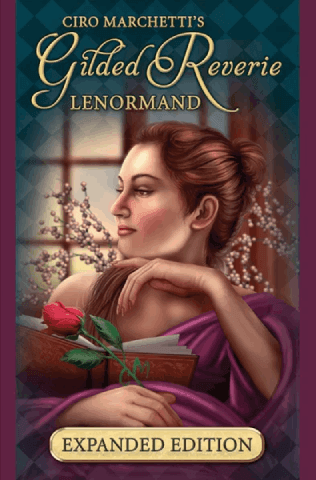

现代雷诺曼 · 作者 Ciro Marchetti
Gilded Reverie Lenormand（鎏金遐想）
现代
数字绘画
巴洛克
宝石色调
扩充版
数字艺术家 Ciro Marchetti 创作的现代雷诺曼，巴洛克风格，宝石般的色调——当代最受欢迎的一副雷诺曼。超现实、繁复，而且名副其实地镀着金。

Gilded Reverie Lenormand（鎏金遐想雷诺曼）出自 Ciro Marchetti（奇罗·马尔凯蒂）之手。他是数字艺术家，早已凭 Tarot of Dreams 和 Legacy of the Divine 在塔罗圈里为人熟知。这副牌 2013 年由 U.S. Games Systems 发行，是最早一批广泛流通的现代雷诺曼之一——它跳出了小开本、素面纸牌的传统，把 36 个图案每一个都当成一件完整的作品来画。此后那一波以艺术为先的现代雷诺曼，很大程度上是被它带起来的。
目前有两个版本。2013 年的初版就是传统的 36 张。几年后推出的扩充版（Expanded Edition）另加了一组可选的替代牌——Marchetti 新设计的符号，让现代读者在处理时间、视角与不确定性一类问题时更有余地。现在市面上卖的多半是扩充版。
Marchetti 的风格很好认：数字绘画配巴洛克纹饰，深沉的宝石色，柔和的金光，还有先做 3D 构图再覆盖上色所带来的、近乎照片般的质感。传统雷诺曼往往是素底上一个物件，Gilded Reverie 却把每张牌都搭成一整个场景——花束从吊灯下的鎏金花瓶里溢出来，船划开月光下的海面，高塔立在铁门之后。画面丰富却不杂乱；符号始终居于中心，而这样的布景让每张牌真正有了氛围。
每张牌的边框上都印着传统编号和对应的扑克牌，因此放进任何古典雷诺曼牌阵都读得顺手——画面添的是层次，而不是对系统的改动。
标准的 36 张一张不少——骑士、幸运草、船、房屋、树、云，一路到十字架。扩充版另加了几张 Marchetti 认为现代读者用得上的可选牌：一些新图像，补上传统 36 张不太够得着的细微牌义。想让系统保持纯粹的人，把它们收起来就是；喜欢尝试的人，可以把它们发进牌阵。
所有传统组合——心 + 戒指、锚 + 鱼、云 + 蛇——的用法与任何古典牌组完全一致。组合仍然是解读的核心。
Gilded Reverie 适合希望雷诺曼在视觉上和塔罗一样有分量的人。如果你是从塔罗转过来的，觉得素净的德式小牌有点单薄，通常就是这副牌把落差补上。它也是最常被推荐给新手的牌——画面够有感染力，能让刚入门的人在背关键词的同时，真的感觉到每个符号的意思。
用惯老牌的传统派有时更偏爱开本更小、画面更素的牌（Blue Owl、Piatnik、1890 年的 Mlle Lenormand），图的是那份年代感。Gilded Reverie 本来就不想做那种牌——它是现代、华丽的那一支，凭自己的路数站住了脚。
目前由 U.S. Games Systems 出版，多数身心灵店家线上线下都有货。最容易买到的是扩充版。2013 年初版的二手品偶尔会出现在二手平台上，价格有时会高出一截。